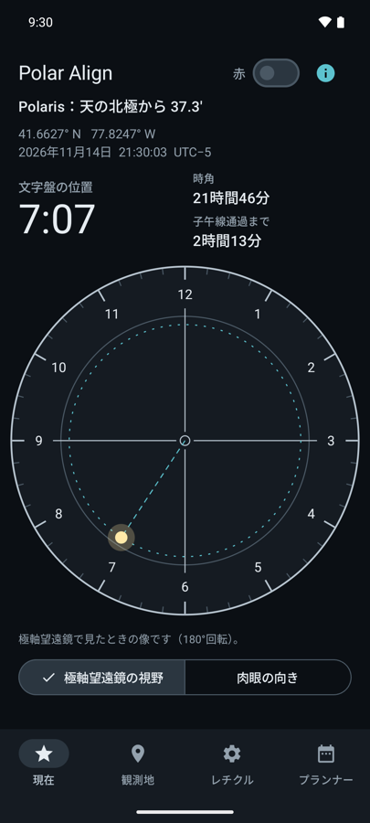
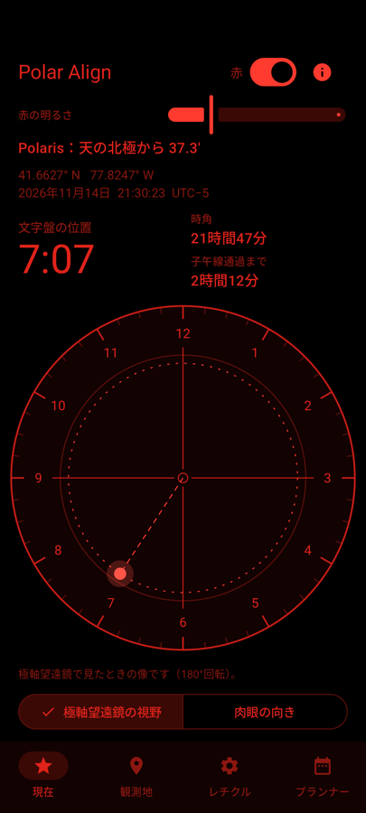

極軸望遠鏡をのぞいたとき、北極星をどこに合わせればよいかを、観測地と現在時刻から表示します。表示された位置に北極星を入れて赤道儀を固定すれば、極軸合わせは終わりです。
Google Play で近日公開


極軸望遠鏡のレチクルと北極星（南半球でははちぶんぎ座σ星）の位置、大きく表示した文字盤の位置、時角、子午線通過までの時間を表示します。極軸望遠鏡で見た向き（180°回転）と肉眼の向きを切り替えられます。
オフラインで動きます。緯度経度を入力するか、「現在地を使う」を一度タップするだけで、位置は端末の外に出ません。赤色の夜間モードではシステムバーも消えるので、画面に白い表示が残りません。広告もアカウント登録もありません。
無料版では、時計型レチクルで北極星の位置をリアルタイムに確認できます（北半球、南半球とも）。Pro は買い切りで、各社の取扱説明書の図をもとにした Sky-Watcher、iOptron、Orion、Celestron のレチクル、24時間目盛り（北半球では北極星の年度リング付き）、文字盤の回転と左右反転、日時を指定できるプランナー、観測地の保存が加わります。
歳差、章動、光行差を含めて計算しています。2026年から2035年までの260通りの条件で天文計算ライブラリ astropy と比べ、時角の差は最大でも0.1分角未満でした。大気差は考慮していません。
極軸望遠鏡を使うのが初めてなら、極軸望遠鏡のレチクルの見方もどうぞ。